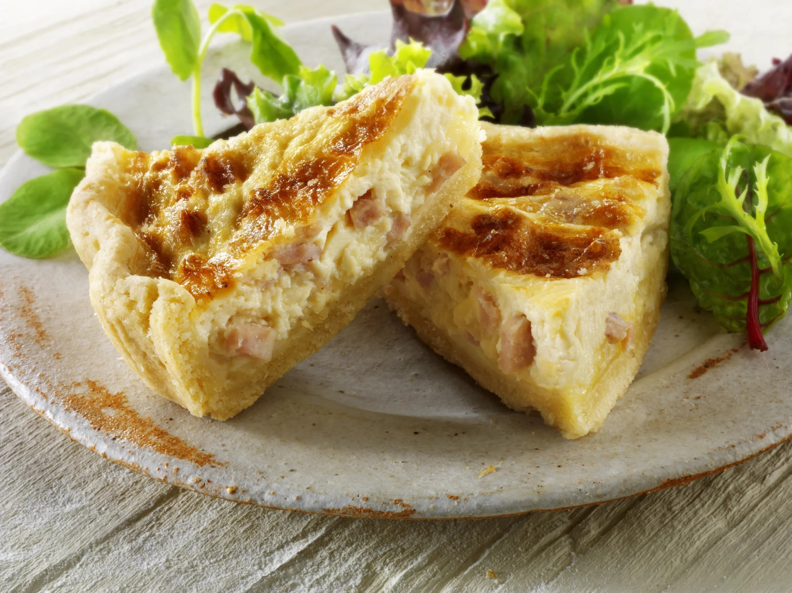

Quiche lorraine
 4-6 servings
4-6 servings 50 min
50 min Source
Source Meat
Meat Salty
Salty
Cyril Lignac’s recipe for quiche lorraine.

Preheat the oven at 210°C.
1Pasty dough- Butter
Spread the dough in a buttered pastry dish. Mark the dough using a fork. Bake the dough empty for 10min.
200gBacon bits
Fry the bacon bits in a pan until golden.
6Eggs40cLCooking cream
Mix the eggs with the cream and some salt.
80gComté (sliced)
Put the Comté on the bottom of the dough once it’s cooked. Add the bacon bits and later the quiche filling. Bake for 30min at 180°C.